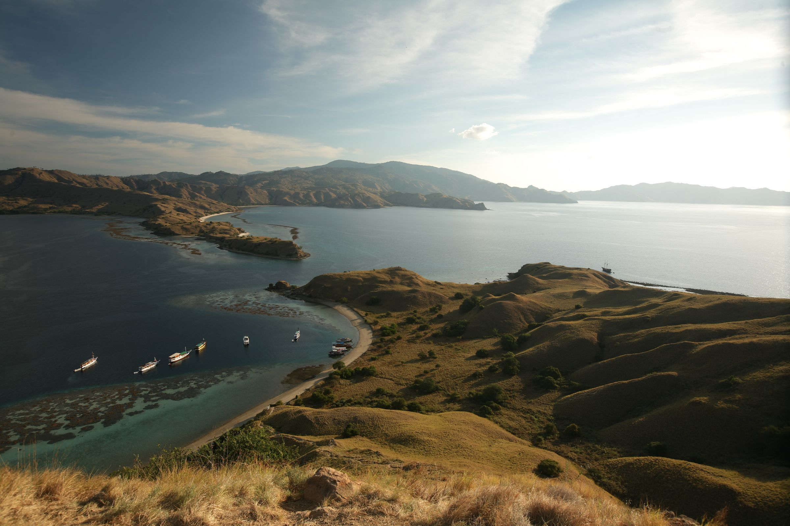
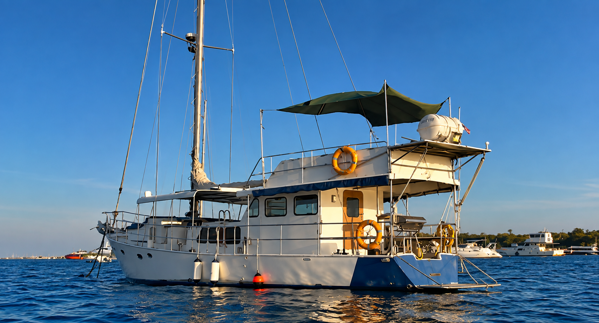
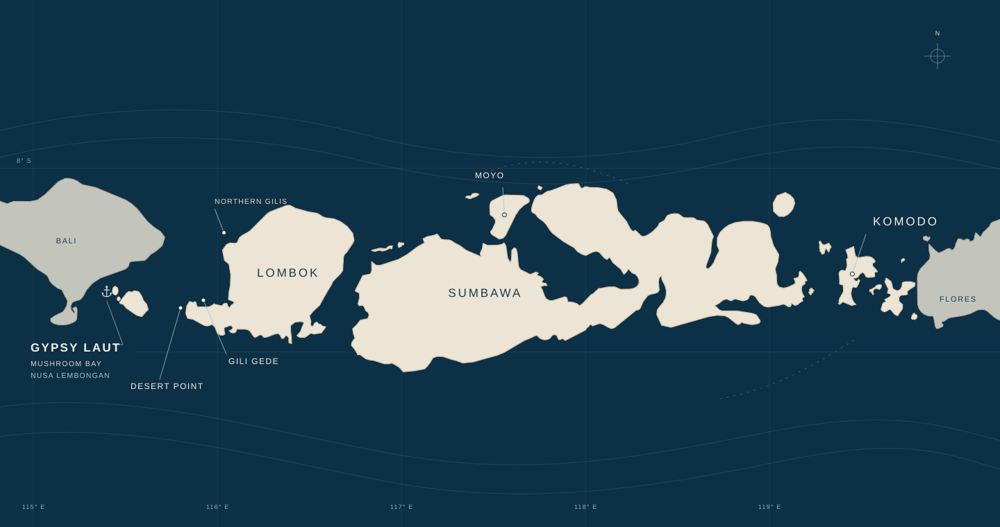
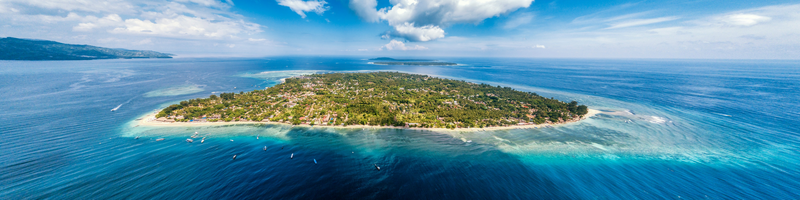
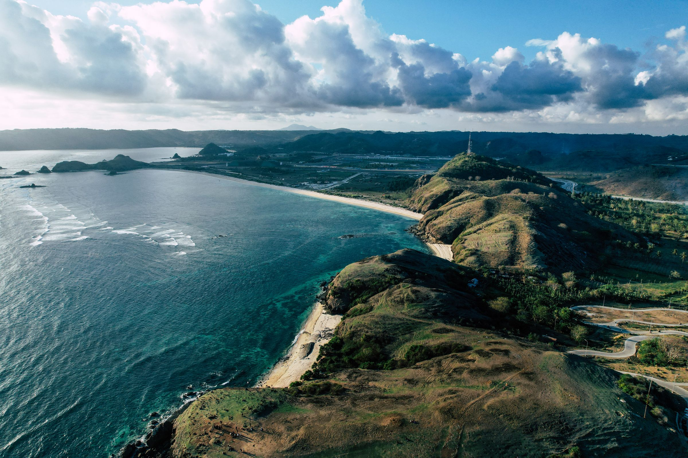
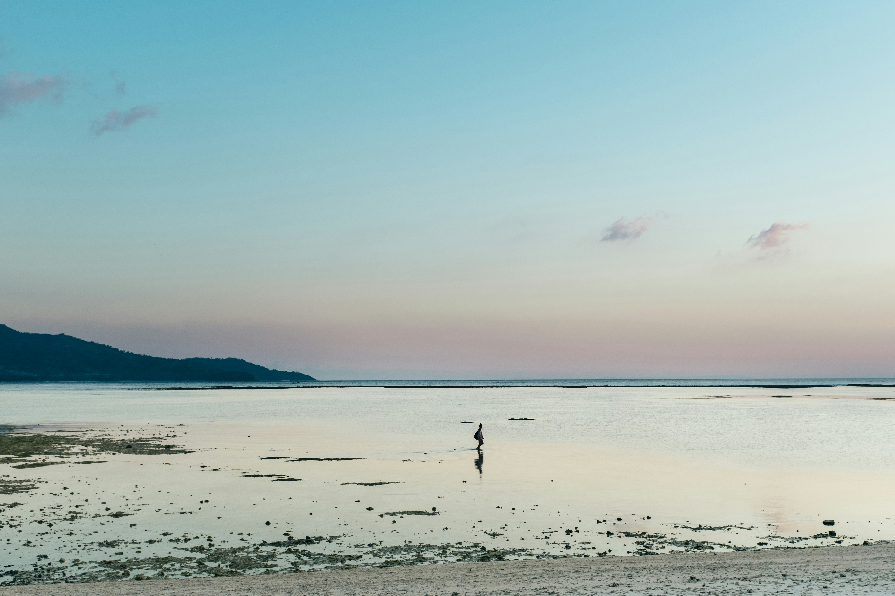
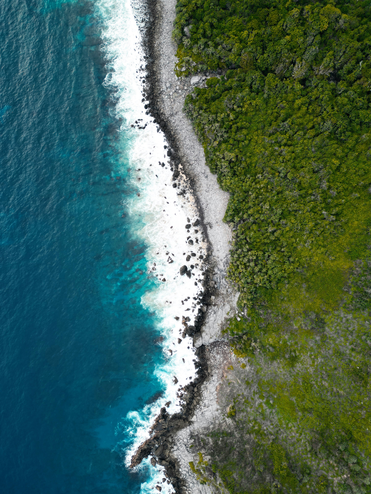
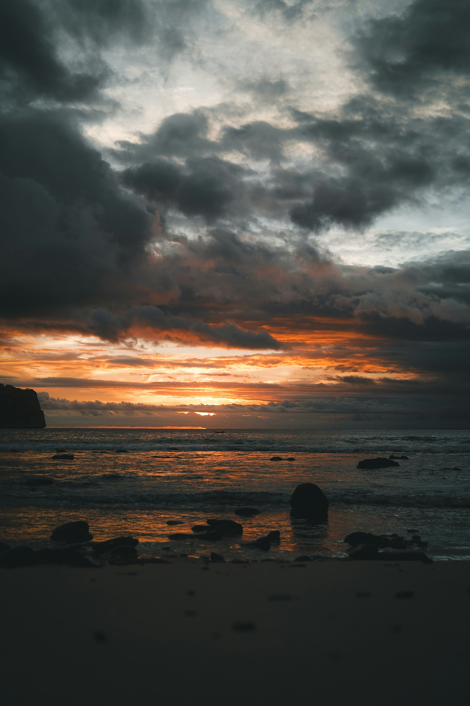
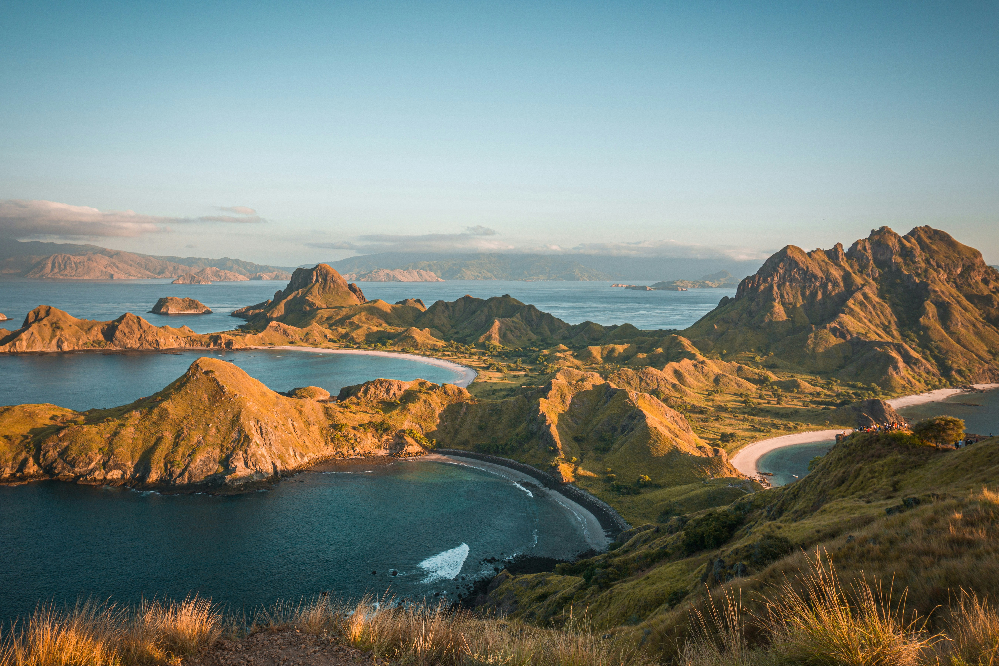
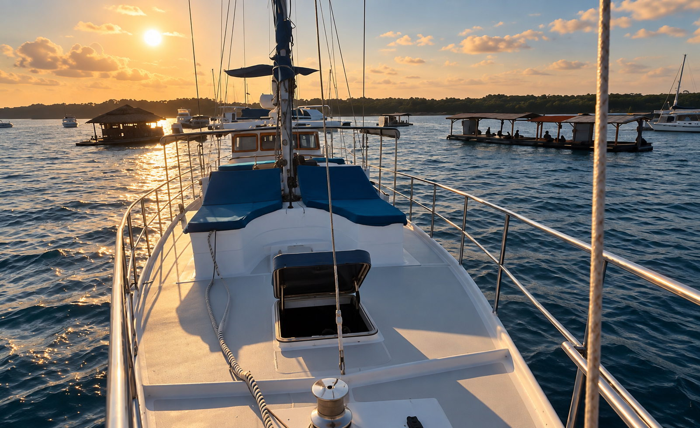

Private Expeditions
Go further.
When you want more than a day around the islands, Gypsy Laut can take the adventure further.
Build a private journey around the places you want to reach, the time you have and what makes sense on the water.
Plan a Private ExpeditionIndonesia By Sea
Your Journey
No fixed route.
These are starting points.
Start from Lembongan and shape the journey around where you want to go.
Stay longer where it feels right. Move on when conditions and timing make sense.
Season, weather, logistics, regulations and feasibility always shape the final plan.

From Here
Indonesia opens up by sea.
Lombok. The Gilis. Sumbawa. Moyo. Komodo. Or somewhere else entirely.
Tell us where you want to go.

Lombok · Gilis
Leave Lembongan behind.
Lombok and the islands around its coast can become the first step into a longer journey.
The Northern Gilis, Gili Gede, Sekotong and Desert Point are names to explore, not waypoints on a preset route.



Sumbawa · Moyo
Keep heading east.
Go beyond the familiar island circuit and let the journey become part of the experience.
Sumbawa and Moyo are starting points for a more remote-feeling expedition.


Komodo
Further still.
Komodo can form part of a longer private journey when season, timing, conditions, logistics and regulations allow.

Life Aboard
The journey happens between the destinations too.
Wake up somewhere different. Eat aboard. Swim when the water looks right. Read on deck. Work online if you need to. Head ashore when it makes sense.
Gypsy Laut remains home while the scenery changes around you.
The saloon, full kitchen, Starlink, watermaker and two tenders help make a longer journey feel lived in, not hurried through.

Aboard
Room to keep going.
- Overnight base aboard.
- SLEEPS 8
- Onboard fuel capacity.
- 5200 L FUEL
- Onboard water capacity.
- 2000 L WATER
- Watermaker.
- 200 L / HR
- Connectivity aboard.
- STARLINK
- Access between vessel, shore and water.
- 2 TENDERS
The Plan Moves
The sea gets a vote.
No expedition route is automatic.
Season, weather, timing, logistics, regulations and feasibility shape where Gypsy Laut can go and when.
That flexibility is part of the point.
Have somewhere else in mind?
Tell us where you want to go.
Start a Conversation
Where do you want to go?
Tell us the places you have in mind, roughly when you want to travel and how long you want to be away. We’ll start from there.
Plan a Private Expedition